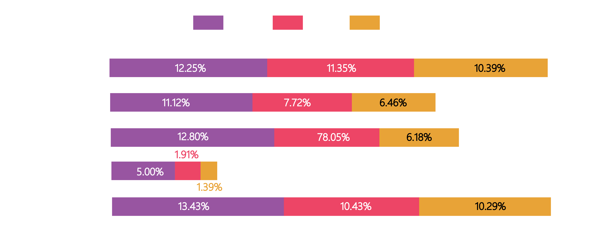
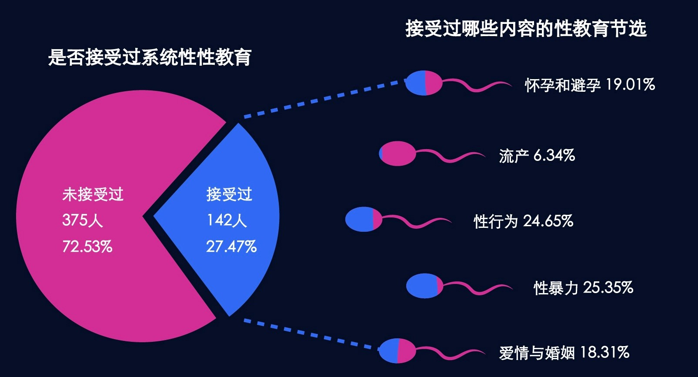
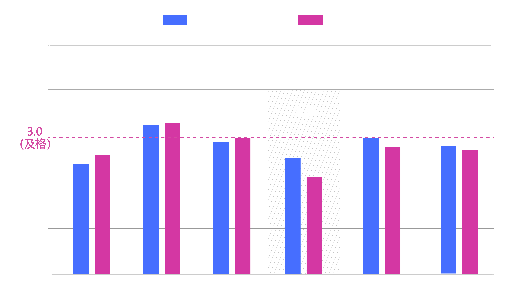

我国青春期生育率的反弹是多种现实因素杂糅而成的结果。
1982年正式开始施行独生子女政策，无意中增强了中国传统上对于男性的偏好。
随着二胎、三胎政策的放开，我国的出生
性别比逐渐回落至正常水平.
但是，由于先前的积累，性别比失衡与“重男轻女”观念的影响仍会广泛、长期地存在。
"女子无才便是德。"
与城市相比，我国乡镇教育资源匮乏，稀缺的受教育机会往往会让给“更受重视”的家庭成员， 即家中的男性成员，因此，乡镇女性的受教育机会被男性挤占。数据分析也印证了这一事实：历年以来，我国女性的受教育程度 在小学及以下的比例远高于男性，男女两性在受教育程度上有较为明显的差异。其中，2005~2006年、2014~2015年女性教育 程度小学及以下的比例都有所回升。结合青春期生育率趋势图来看，这两个时间段恰好与青春期生育率上升阶段相吻合，可见从 宏观来看，教育与青春期生育率有一定相关性。
数据来源：国家统计局
"我们这里一个老师教五门课。"
除却性别差异，城乡、内地与沿海教育不均衡一直是我国教育领域存在的重要问题。
人口根基在乡镇，而乡镇却相对缺乏教育资源。知识改变命运，而无数朴实的小镇青年甚至没有改变命运的机会。 数据表明，随着义务教育的普及，我国6岁及以上低学历人口的比例呈逐年下降的趋势，但是，在城镇乡之间却有着一条难以跨越的鸿沟。
数据来源：国家统计局
此外，选择在15~19岁这一年龄段生育的女性以初中、小学及更低学历为主，乡村少女生育的比例更是远远高于城市。值得一提的是，城市的青少年生育率随着学历从未上过学到初中而增长，结合人口流动可以推测，这一部分女性很有可能就是接受完义务教育后，便早早来到城市打工、寻找伴侣、生孩子的那部分乡镇女孩。
数据来源：国家统计局
根据数据分析，教育程度对青春期生育率的影响具有显著性，即教育程度是影响青春期生育率的重要因素，其中，小学及以下学 历与青春期生育率的相关性最高。将小学及以下人口按照城镇乡区分后，更能清楚地看到全国各地城、镇、乡人口的受教育水平与青 少年生育率更是出现了明显的分层。
数据来源：国家统计局
数据来源：国家统计局
脱离城镇乡的框架，放眼各省，东南沿海与中西部内地的差异同样显著。贵州、青海、云南、西藏……西部地区孩子们的受教育 程度不及东部，而青少年生育率却远高于东部；足以见得，提高偏远地区的教育水平，任重而道远。
"弟弟要上学，我只能外出打工补贴。"
总体上看，我国流动人口中男性居多，这也符合男性外出闯荡、挣钱养家的现实情况。但是，在17岁至23岁这一区间内， 女性的比例呈现 出较为明显的升高，性别比甚至有低于100的情况。这是由教育资源匮乏、教育机会不平等所引发的人口流动。我国乡镇教育资源相对稀缺，家 中仅有少数学龄儿童能接受高中教育，因此，年轻女性读高中的比例远低于男性，她们比男性 更早进入劳动力市场，从户籍地流动到现住地工作，这一现状进一步加剧了农村地区男女比例的失调，致使早婚早孕的现象更为普遍。
此外，在外出流动的过程中，因为缺乏了家庭的管教与成年人的引导，年轻女性也更容易和男性结伴而行，不少“宝爸宝妈”就是在打工的过程中相识相知。在宽松自由的氛围下，也更容易催生没有保护措施的性行为，使得早孕情况更为突出。
数据来源：国家统计局
根据广东统计局对2010年人口普查中未成年流动人口数据的分析可知，学龄前儿童（0-5周岁）、小学学龄儿童（6-11 周岁）、初中学龄 儿童（12-14周岁）阶段流动人口的男女比远高于大龄组（15-17周岁），这也侧面反映了在义务教育阶段， 父母在选择携带子女一起外出打工时存在性别偏好，更倾向携带男孩在工作地异地上学。
数据来源：国家统计局
自身及其父母的人口流动将进一步加剧原属地的男女比例失衡，使得适婚女性在当地成为稀缺资源，是农村地区早婚早孕现象的隐形推手。
"教这种课是会被家长举报的。"
除却基础教育，性教育缺失也是早孕现象产生的原因之一。我国的性教育存在“起步早、发展缓、不平衡、落实弱”的特点，无论是在经济发 达地区还是欠发达地区，性教育的普及都还有许多提升空间。
图12 全国在校生性教育课程覆盖情况
数据来源：《中国大学生性与生殖健康调查》北京大学公共卫生学院，2016
2016年中国计划生育协会发布的《大学生性与生殖健康报告》显示，与城市相比，乡镇与农村的性教育课程覆盖率在各个阶段都更低，城乡 之间存在差异，一定程度上致使经济欠发达地区的青春期生育率更高。此外，在高中阶段，即15岁之前性教育课程的总覆盖率仅有35.33%，也就 是说，多数少女妈妈在怀孕之前并没有接受过性教育，对性行为和避孕措施缺乏科学性、系统性的了解，而这也反向验证了普及性教育是规避早孕 的重要手段之一。
即使是在接受性教育课程的群体中，性行为、怀孕、避孕和流产等相关知识的覆盖程度与理解程度也是相对最弱的。
图13 西部某省6所乡镇中学性教育课程覆盖情况
数据来源：中学生性与生殖健康教育课程随机对照实验，玛丽特普国际组织与清华大学公共健康研究中心，2018
玛丽斯特普国际组织与清华大学公共健康研究中心共同推进的中学生性与生殖健康教育课程随机对照实验显示，在现有的性教育课程中， “流产”知识点的覆盖率最低，仅有6.34%，其次是“怀孕和避孕”与“性行为”，分别为19.01%和24.65%。该差异说明我国在性教育方面存在 一定的偏向性，有意或无意地规避了从传统意义上来说“难以启齿”的问题，不利于青少年全面认知自己、保护自己，改革与发展性教育内容及体 系任重道远。
图14 全国14-17岁青少年性质是测试得分情况
数据来源：潘绥铭，黄盈盈（2011） 我国14-17岁青少年性教育效果实证分析，中国青年研究
在另一项对14-17岁青少年的研究中，男生女生们对避孕相关知识的掌握程度也是最低的，且男女之间有相对较为显著的差异，这将本就处 于弱势的女孩们置入更危险的境地，极有可能在缺乏认知的情况下同意对方“不负责任的性行为”，加剧早孕现象的形成。